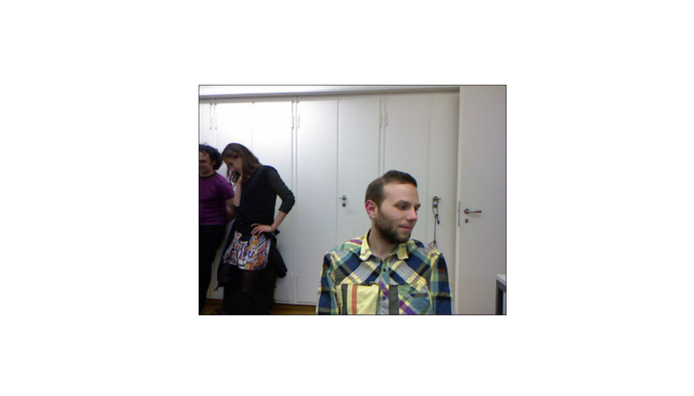
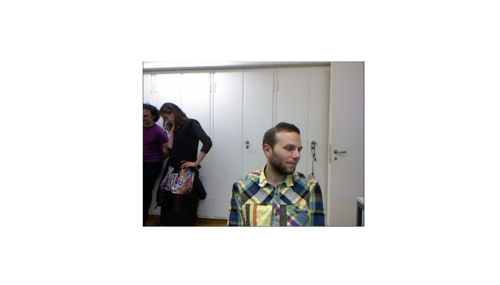
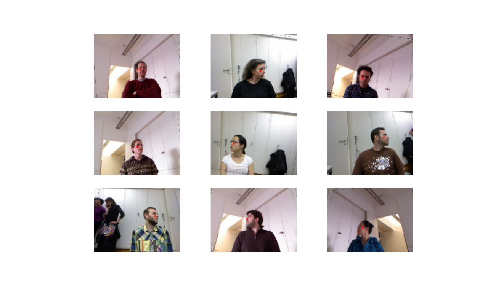
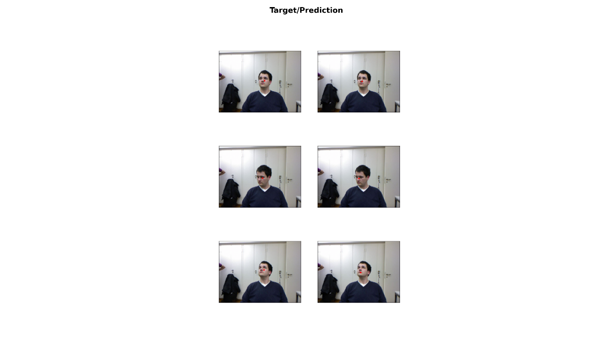

The fastai library simplifies training fast and accurate neural nets using modern best practices. See the fastai website to get started. The library is based on research into deep learning best practices undertaken at fast.ai, and includes “out of the box” support for vision, text, tabular, and collab (collaborative filtering) models.
Our task is to find the center of the head in each image.
To achieve the goal, we need to do the following:
DataBlock
Upload an example:
library(fastai)
library(magrittr)
path = 'biwi_head_pose'
fname = '09/frame_00667_rgb.jpg'
img = Image_create(paste(path,fname,sep = '/'))
img %>% show() %>% plot()
cal = readr::read_lines(paste(path,'01/rgb.cal',sep = '/'), n_max = 3) %>% trimws() %>%
strsplit('\\s') %>% do.call(rbind,.) %>% apply(.,2,as.numeric)
To add the points, we need to write simple functions:
img2txt_name <- function(f) {
paste(
substr(f, 1, nchar(f)-7), 'pose.txt',
sep = ''
)
}
convert_biwi <- function(coords) {
c1 = coords[1] * cal[1,][1]/coords[3] + cal[1,][3]
c2 = coords[2] * cal[2,][2]/coords[3] + cal[2,][3]
return(tensor(c1,c2))
}
get_ctr <- function(f) {
# trick to make dataloaders work
f = as.character(f)
ctr = readr::read_lines(img2txt_name(f), skip = 4, n_max = 1) %>% trimws() %>%
strsplit('\\s') %>% unlist() %>% as.numeric()
convert_biwi(ctr)
}
get_ip <- function(img, pts) {
TensorPoint_create(pts, img_size = img$size)
}
ctr = readr::read_lines(img2txt_name(paste(path,fname,sep = '/')),
skip = 4, n_max = 1) %>% trimws() %>%
strsplit('\\s') %>% unlist() %>% as.numeric()Now, it is easier to add red points:
ctr = get_ctr(paste(path,fname,sep = '/'))
ax = img %>% show(figsize = c(6, 6))
img %>% get_ip(ctr) %>% show(ctx = ax) %>% plot()
Prepare data laoder object and see batch:
dblock = DataBlock(blocks = list(ImageBlock(), PointBlock()),
get_items = get_image_files(),
splitter = FuncSplitter(function(x) x$parent$name == '13'),
get_y = get_ctr,
batch_tfms = list(aug_transforms(size = c(120,160)),
Normalize_from_stats(imagenet_stats()
)
)
)
dls = dblock %>% dataloaders(path, path = path, bs = 64)
dls %>% show_batch(max_n = 9, figsize = c(9,6))
Run for 5 epochs and see results:
learn = cnn_learner(dls, resnet34())
learn %>% lr_find()
learn %>% plot_lr_find()
lr = 2e-2
learn %>% fit_one_cycle(5, slice(lr))
learn %>% show_results(dpi = 200)epoch train_loss valid_loss time
0 1.818259 0.861968 00:35
1 0.222080 0.056300 00:34
2 0.028511 0.012499 00:33
3 0.017333 0.003378 00:33
4 0.015135 0.004777 00:33 